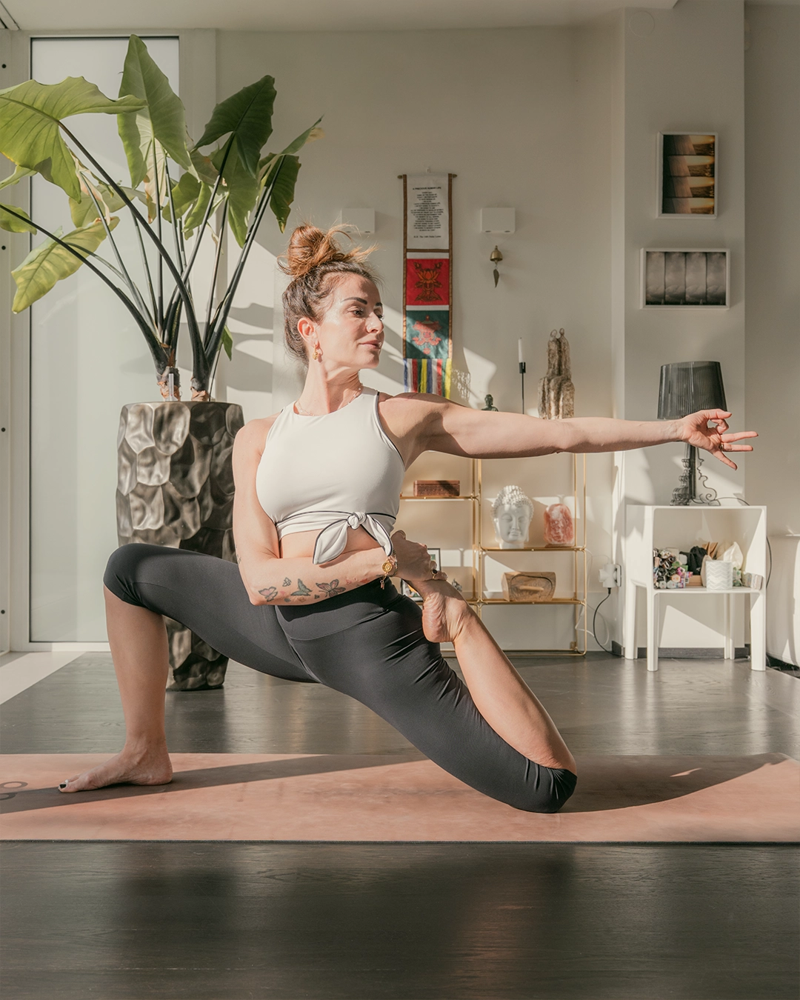

Yoga
Il percorso Yoga
Uno strumento di conoscenza di sé che integra movimento, respiro e consapevolezza in modo scientifico e personalizzato. Percorsi individuali e di gruppo, in presenza e a distanza.
Scopri il percorso Yoga
Nicoletta Ingusci lavora con persone e organizzazioni per costruire percorsi di benessere reali, personalizzati e sostenibili, integrando yoga, coaching e conoscenze scientifiche.
Yoga e coaching sono strumenti distinti che puoi seguire separatamente o come parte di un percorso costruito intorno a te.
Uno strumento di conoscenza di sé che integra movimento, respiro e consapevolezza in modo scientifico e personalizzato. Percorsi individuali e di gruppo, in presenza e a distanza.
Scopri il percorso Yoga
Un percorso che parte dall'ascolto per portare chiarezza, strumenti concreti e direzione. Non soluzioni rapide, ma cambiamenti reali e sostenibili nel tempo.
Scopri il CoachingYoga e coaching possono essere integrati in un percorso costruito intorno a te.
Programmi tailor made per team e organizzazioni. Non attività di wellness generiche, ma interventi integrati, credibili e misurabili che rispondono ai bisogni reali delle persone.
![[Articolo in evidenza]](Assets/Foto/newseeventi.webp)
[Breve estratto dell'articolo — da aggiornare con contenuto reale.]
Leggi l'articolo![[Articolo]](Assets/Foto/newseeventi2.webp)
![[Articolo]](Assets/Foto/newseeventi3.webp)
[Breve descrizione dell'evento. Da aggiornare con dati reali non appena disponibili.]
Scopri l'evento e prenota[Testimonianza — da aggiornare con una recensione reale e autorizzata. Non inventare contenuti.]
[Testimonianza — da aggiornare con una recensione reale e autorizzata.]
[Testimonianza — da aggiornare con una recensione reale e autorizzata.]
Inizia da qui
Compila il form o scrivi direttamente. Nicoletta o il suo team risponderanno per capire insieme il percorso più adatto.
[Titolo professionale e qualifica — da aggiornare con dati reali.] Lavora con persone e organizzazioni per costruire percorsi di benessere reali, personalizzati e sostenibili.
Nel 2009 sono entrata per caso in una Shala, e ho sentito di aver trovato il mio posto nel mondo. Ho studiato con il maestro Prashant Pandey della scuola Bihar (India), apprendendo la tradizione yogica più autentica. Insegno Vinyasa, Hatha, Ashtanga, Yin, Pranayama, Meditazione e Yoga Nidra.
Nel 2020 ho completato la formazione in NLP Coaching (European Institute for Coaching and NLP), dando forma a un metodo integrato: yoga e coaching come strumenti complementari. Nel 2019 ho fondato il progetto "Yoga, alleato contro il cancro", oggi attivo in tutta Italia.
Il tappetino è il mio amico più fedele, compagno inseparabile di esplorazione dell'anima. Su di esso traccio ogni giorno pratiche personali e di insegnamento, perché il benessere non è un traguardo, è una pratica.
Percorsi individuali e di gruppo. Pratica, respiro e consapevolezza radicati nella tradizione, orientati al benessere contemporaneo.
Scopri il percorsoChiarezza, strumenti concreti e cambiamenti sostenibili. Un metodo strutturato per fare chiarezza su sé stessi e scegliere con più consapevolezza.
Scopri il percorso
Programmi tailor made per team e organizzazioni. Non wellness generico, ma interventi credibili e misurabili che rispondono ai bisogni reali.
Scopri i programmiOgni percorso inizia da un incontro, non da un programma preconfezionato.
La pratica è fondata su evidenze, ma non si riduce a protocolli fissi.
Non adatto a tutti allo stesso modo: ogni percorso è costruito sulla persona.
Non trasformazioni immediate, ma pratiche che si integrano nella vita.
Chiarezza su cosa il percorso può e non può fare.
Sono un'eterna studente, una dimostrante. Sono un'istruttrice di yoga. Sono una coach. Sono la tua compagna di viaggio.


Uno strumento di conoscenza di sé che integra movimento, respiro e consapevolezza in modo scientifico, personalizzato e accessibile.
È un sistema integrato che lavora su corpo, mente e respiro. Un percorso che parte dall'osservazione di sé per costruire equilibrio, consapevolezza e strumenti concreti da portare nella vita quotidiana.
L'approccio di Nicoletta si distingue per il rigore scientifico con cui integra la pratica tradizionale con le conoscenze sul sistema nervoso, sull'anatomia funzionale e sulla fisiologia del respiro.
Un approccio consapevole e personalizzato, non una pratica generica di gruppo.
Chi sente stress o tensione fisica e vuole strumenti concreti per gestirli
Chi ha già una pratica e vuole approfondirla con un supporto esperto
Chi si avvicina per la prima volta allo yoga con curiosità e serietà
Chi cerca un equilibrio psicofisico sostenibile nel tempo
Chi vuole integrare la pratica con un percorso di coaching o benessere personale
Cosa cambia nel tempo
Strumenti pratici per regolare il sistema nervoso e gestire la risposta allo stress.
Tecniche di respiro e rilassamento che supportano il recupero fisico e mentale.
Ascolto più profondo del corpo, migliore postura e libertà di movimento.
Attenzione, lucidità e capacità di restare nel momento anche sotto pressione.
Ogni percorso inizia da una valutazione iniziale. Non esistono protocolli fissi: la pratica si costruisce intorno alla persona.
Una conversazione per capire esigenze, obiettivi e contesto fisico e mentale della persona.
Struttura, frequenza e contenuti delle sessioni, adattati alle esigenze e ai tempi della persona.
Sessioni continuative con adattamenti progressivi e momenti di verifica.
Lavoro personalizzato, ritmo proprio, massima attenzione alle esigenze specifiche. In presenza o online.
Gruppi piccoli e omogenei per una pratica condivisa e supportata.
Percorsi a distanza con la stessa qualità e attenzione delle sessioni in presenza.
Appuntamenti intensivi, residenziali o giornalieri. Vedi il calendario
Un primo incontro conoscitivo, senza impegno, per capire insieme se questo percorso fa al caso tuo.
Un percorso che parte dall'ascolto per portare chiarezza, strumenti concreti e direzione. Non soluzioni rapide, ma cambiamenti reali e sostenibili.
Il coaching di Nicoletta Ingusci non promette trasformazioni rapide né offre risposte preconfezionate. Offre un metodo rigoroso, basato sull'ascolto e su strumenti scientificamente fondati, per aiutare le persone a fare chiarezza e scegliere con più consapevolezza.
Il percorso parte sempre da dove sei. Non da dove dovresti essere. Il lavoro consiste nel comprendere meglio la propria situazione, individuare i margini di cambiamento reale e costruire strumenti applicabili nella vita quotidiana.
Un percorso costruito sulla persona, non su un protocollo.
Donne in una fase di transizione personale o professionale
Chi sente di essere fuori dal proprio equilibrio e non sa da dove ricominciare
Chi vuole prendere decisioni più consapevoli su lavoro, relazioni o stile di vita
Chi ha già intrapreso un percorso di crescita e vuole approfondirlo con metodo
Chi cerca strumenti concreti, non solo supporto emotivo
Cosa si affronta insieme
Quando non si sa cosa si vuole davvero o si è confusi tra opzioni e aspettative.
Quando si fatica a stare nei propri ritmi e si cerca un modo più sostenibile di funzionare.
Cambiamenti di lavoro, relazioni, fasi di vita. Come attraversarli con più consapevolezza.
Imparare a osservarsi e a scegliere piuttosto che reagire automaticamente.
Il percorso si costruisce insieme, sessione dopo sessione. Non esiste un protocollo fisso.
Un primo incontro gratuito per capire cosa stai cercando e se il coaching con Nicoletta è la risposta giusta.
Definizione degli obiettivi, della frequenza e della struttura delle sessioni.
Sessioni individuali con strumenti di supporto e spazio per integrare il lavoro nella vita quotidiana.
Capire cosa conta davvero, cosa si vuole e in quale direzione andare.
Meno reattività automatica, più capacità di scegliere con intenzione.
Non solo insight, ma pratiche concrete da usare nella vita quotidiana.
Un modo più sostenibile di stare nel lavoro, nelle relazioni e con se stessi.
La capacità di affrontare i cambiamenti con più stabilità interiore.
Non trasformazioni immediate: percorsi che si consolidano nel tempo.
Il primo passo è una consulenza conoscitiva gratuita. Senza impegno, per capire insieme se questo percorso è quello giusto per te.
Programmi tailor made per team e organizzazioni. Non attività di wellness generiche, ma interventi integrati, credibili e adattati al contesto specifico di ogni realtà.
Stress cronico, burnout, turnover, difficoltà di concentrazione e collaborazione sono segnali che il benessere delle persone non è una questione accessoria. È una variabile che impatta direttamente sulla performance e sulla qualità del lavoro.
Segnali da riconoscere
Stress e sovraccarico diffusi nel team
Difficoltà di focus, concentrazione e presenza
Tensioni relazionali e scarsa coesione
Assenteismo elevato o segnali di burnout
Difficoltà ad attrarre e trattenere talenti
Programmi di welfare esistenti ma poco efficaci
Strumenti concreti per gestire il carico e prevenire l'esaurimento delle persone.
Più concentrazione, qualità dell'attenzione e capacità decisionale nel lavoro quotidiano.
Relazioni più collaborative, comunicazione più efficace, meno conflitti e tensioni.
Pratiche trasferibili nella routine lavorativa e personale di ogni collaboratore.
Nessun programma generico: ogni intervento è costruito sul contesto specifico dell'organizzazione.
Fondato su evidenze scientifiche, con risultati monitorabili nel tempo.
[Testimonianza — da aggiornare con una recensione reale e autorizzata.]
[Testimonianza — da aggiornare con una recensione reale e autorizzata.]
[Testimonianza — da aggiornare con una recensione reale e autorizzata.]
Ogni organizzazione è diversa. Il primo passo è sempre una conversazione per capire le esigenze reali e valutare insieme il tipo di intervento più adatto.
Spazi di pratica, approfondimento e condivisione. Ogni evento è pensato come un'occasione concreta, non come un'esperienza generica.
[Tipo evento — es. Retreat]
[Descrizione dell'evento in evidenza — da aggiornare. Cosa si fa, per chi è pensato, cosa si porta a casa. Massimo 3-4 righe.]
[Posti disponibili / quota / note — da aggiornare]
[Breve descrizione — da aggiornare.]
[Breve descrizione — da aggiornare.]
[Breve descrizione — da aggiornare.]
Scrivici per essere inserito nella lista e ricevere le date in anteprima.
Articoli, guide e contenuti gratuiti su yoga, coaching e benessere. Materiali utili, non generici.
[Estratto dell'articolo in evidenza — da aggiornare. 2-3 righe che introducono il tema e invogliano alla lettura.]
Leggi l'articolo[Estratto breve — da aggiornare.]
Leggi →[Estratto breve — da aggiornare.]
Leggi →[Estratto breve — da aggiornare.]
Leggi →[Estratto breve — da aggiornare.]
Leggi →[Estratto breve — da aggiornare.]
Leggi →[Estratto breve — da aggiornare.]
Leggi →Scrivici per ricevere articoli, risorse e aggiornamenti sugli eventi.
[Descrizione breve del podcast — da aggiornare. Di cosa parla, con chi, con quale frequenza di uscita.]

[Descrizione episodio — da aggiornare. Di cosa tratta, eventuale ospite, spunto principale.]
“[Citazione estratta dall'episodio — da aggiornare.]”
[Breve descrizione — da aggiornare.]
[Breve descrizione — da aggiornare.]
[Breve descrizione — da aggiornare.]
Compila il form per ricevere informazioni sui percorsi, prenotare una call conoscitiva gratuita o chiedere un preventivo per la tua azienda.
Dove si lavora
[Città / modalità — da inserire]
Tempi di risposta
Entro 1-2 giorni lavorativi
Prima call conoscitiva
Scegli "Yoga" o "Coaching" nel form e aggiungi nel messaggio che desideri prenotare una prima call gratuita. Ti rispondo con le disponibilità.
Dopo che invii il form, ti rispondo via email entro 1-2 giorni lavorativi. Se è il caso, organizziamo una breve call conoscitiva gratuita per capire come posso aiutarti.
[Risposta — da aggiornare con le modalità reali offerte da Nicoletta: in presenza, online, o entrambe.]
Sì. Seleziona "Benessere aziendale" nel form e descrivi brevemente il tuo contesto (dimensione del team, obiettivi). Rispondo con una prima proposta personalizzata.